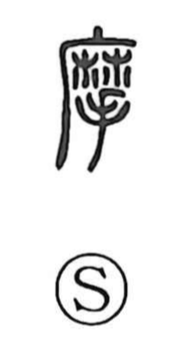

摩

Uncategorized
Kun: kosuru, suru, migaku | On: ma
to rub ・ to scour ・ to polish
Explanation
A phono-semantic character with 麻 as the phonetic element indicating the on reading ma. Classical sources such as the Shuowen gloss it as “to sharpen, whet, polish.” The graph evokes hands brought together and rubbing, which naturally yields the senses “to rub,” “to scour,” and “to polish.” This core idea is preserved in compounds like 摩訶不思議 (makafushigi), used for something extraordinarily mysterious or baffling.